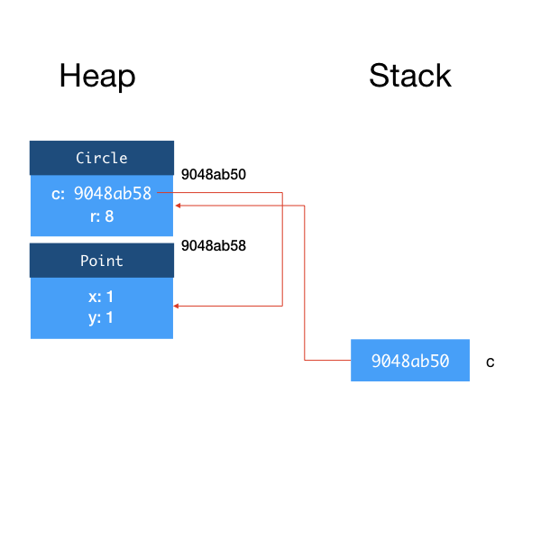
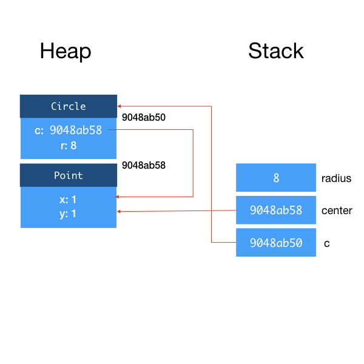
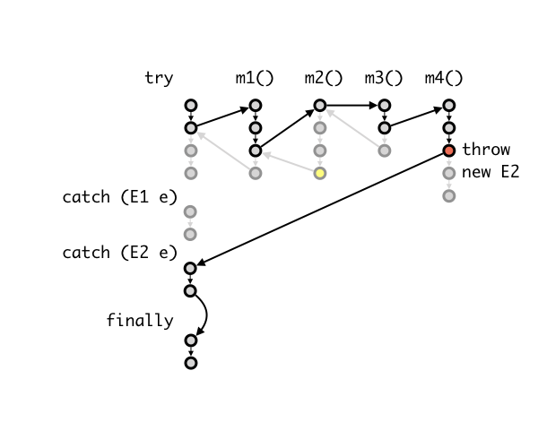

Lecture 4: Memory, Exception and Generics
Learning Outcomes
After this class, students should:
- be understand when memory are allocated/deallocated from heap vs. from stack
- understand the concept of call stack in JVM
- understand how Java call by reference and call by value
- know about the keywords
null,try,catch,finally,throw, andthrows. - appreciate why exceptions is useful way of handling errors
- aware of the differences between errors, unchecked exception, and checked exception in Java
- be able to trace through the control flow of
try/catch/finallyblock - how to generate an exception and create a new exception
- not commit bad practices when using exceptions
- apprecaite why generics is helpful
- be able to create generic class with type parameter, and instantiate parameterized type by passing in type arguments.
Where are Objects and Variables Stored?
First, let's look at where Java stores the objects and variables when a program is executed. There are two memory regions, a heap and a stack1. The heap is where all objects are allocated, while the stack is where all variables (including primitive types and object references) are allocated.
Considers the following two lines of code.
1 2 | Circle c; c = new Circle(new Point(1, 1), 8); |
c. When Java executes this line of code, it allocates some memory space for an object reference for c, the content is initialized to null. Since c is a variable, it resides in the stack.
null in Java
null is a special value for object reference, that signify that this reference is not pointing to any object. This is similar to the null in Javascript, NULL macro in C, nullptr in C++11, None in Python, nil in Objective-C. (Again, you see here computer scientists just can't agree on names!) Sir Tony Hoare (who also invented quicksort) famously apologized for inventing the null pointer. He calls it his billion-dollar mistake.
Line 2 creates a new Circle object. When Java executes this line of code, it allocates some memory space for a Circle object on the heap. The memory address of this memory space becomes the reference of the object, and is assigned to the variable c.
This is shown in the figure below2.

The first argument to Circle constructor is also an object, so to be more precise, when Line 2 above is executed, a Point object is also created and allocated on the heap. So the field c inside Circle is actually a reference to this object.

Now, let's look at a slightly different example.
1 2 3 4 5 6 | Circle c; Point center; double radius; radius = 8; center = new Point(1, 1); c = new Circle(center, radius); |
In the second example, we have three variables, c, center, and radius . Lines 1-3 declare the variables, and as a result, we have three variables allocated on the stack. Recall that for object references, they are initialized to null. Primitive type variables (e.g., radius) are initialized to 0.

After Lines 4-6, we have:

Call Stack
Now, let's look at what happens when we invoke a method. Take the distanceTo method in Point as an example:
1 2 3 4 5 6 7 | class Point { private double x; private double y; public double distanceTo(Point q) { return Math.sqrt((q.x - this.x)*(q.x - this.x)+(q.y - this.y)*(q.y - this.y)); } } |
1 2 3 | Point p1 = new Point(0,0); Point p2 = new Point(1,1); p1.distanceTo(p2); |
After declaring p1 and p2 and creating both objects, we have:

Let's see what happen when we call distanceTo. How is the argument q initialized? What about this?
When distanceTo is called, Java (to be more precise, the Java Virtual Machine, or JVM) creates a stack frame for this instance method call. This stack frame is a region of memory that tentatively contains (i) the this reference, (ii) the method arguments, and (iii) local variables within the method, among other things34. When a class method is called, the stack frame does not contain the this reference.

You can see that the reference of the objects p1 and p2 are copied onto the stack frame. p1 and this point to the same object, and p2 and q point to the same object.
Within the method, any modification done to this would change the object referenced to by p1, and any change made to q would change the object referenced to by p2 as well.
After the method returns, the stack frame for that method is destroyed.
Let's call the move function from your Lab 1, with arguments (double theta, double d).
1 2 3 | double theta = Math.PI/4.0; double distance = 1; p2.move(theta, distance); |
Again, we create a stack frame, copy the reference to object p2 into this, copy theta from the calling function to theta the argument within the method, copy distance from the calling function to d the argument within the method. Recall that, in this function, you actually change the x and y of this to move p2.

What is important here is that, as theta and distance are primitive types instead of references, we copy the values onto the stack. If we change theta or d within move, the theta and distance of the calling function will not change. This behavior is the same as you would expect in C. However, unlike in C where you can pass in a pointer to a variable, you cannot pass in a reference to a primitive type in any way in Java. If you want to pass in a variable of primitive type into a method and have its value changed, you will have to use a wrapper class, but we leave the details of that for another lesson on another day.
In short, Java uses call by value for primitive types, and call by reference for objects.
If we made multiple nested method calls, as we usually do, the stack frames get stacked on top of each other. For instance, in Lab 1, main calls solve, which calls the Circle constructor, which calls the angleTo. When JVM is executing angleTo, the call stack contains the stack frames of (in order of top to bottom): angleTo, Circle constructor, solve, and main.
One final note: the memory allocated on the stack are deallocated when a method returns. The memory allocated on the heap, however, stays there as long as there is a reference to it (either from another object or from a variable in the stack). Unlike C or C++, in Java, you do not have to free the memory allocated to objects. The JVM runs a garbage collector that checks for unreferenced objects on the heap and cleans up the memory automatically.
Exceptions
One of the nuances of programming is having to write code to deal with exceptions and errors. Consider writing a method that reads in a series of x and y coordinates from a file, not unlike what you have seen in Lab 1. Here are some things that could go wrong:
- The file to read from may not exist
- The file to read from exists, but you may not have permission to read it
- You can open the file for reading, but it might contain non-numeric text where you numerical values
- The file might contain fewer values than expected
- The file might become unreadable as you are reading through it (e.g., someone unplug the USB drive)
In C, we usually have to write code like this:
1 2 3 4 5 6 7 8 9 10 11 12 13 14 15 16 17 18 19 20 21 22 23 | fd = fopen(filename,"r"); if (fd == NULL) { fprintf(stderr, "Unable to open file. "); if (errno == ENFILE) { fprintf(stderr, "Too many opened files. Unable to open another\n"); } else if (errno == ENOENT) { fprintf(stderr, "No such file %s\n", filename); } else if (errno == EACCES) { fprintf(stderr, "No read permission to %s\n", filename); } return -1; } scanned = fscanf(fd, "%d", &num_of_points); if (scanned == 0) { fprintf(stderr, "Unable to scan for an integer\n"); fclose(fd); return -2; } if (scanned == EOF) { fprintf(stderr, "No input found.\n"); fclose(fd); return -3; } |
Out of the lines above, only 2 lines correspond to the actual tasks, the others are for exception checking/handling. How uncool is that? Furthermore, the actual tasks are intersperse between exception checking code, making reading and understanding the logic of the code difficult.
The examples above also have to return different values to the calling method, because the calling method may have to do something to handle the errors. Note that the POSIX APIs has a global variable errno which signifies the detailed error. First, we have to check for different errno values and react accordingly (we can use perror, but that has its limits). Second, errno is global and we know that global variable is bad practice. In fact, I am not even sure that code above works because fprintf in Line 3 might have changed errno!
Then, there is the issue of having to repeatedly clean up after an error -- here we fclose the file if there is an error reading, twice. It is easy to forgot to do so if we have to do this in multiple places. Furthermore, if we need to perform more complex clean up, then we would end up with lots of repeated code.
Java supports try/catch/finally control statements, which is a way to group statements that check/handle errors together making code easier to read. The Java equivalent to the above is:
1 2 3 4 5 6 7 8 9 10 11 12 13 14 15 16 17 18 | try { reader = new FileReader(filename); scanner = new Scanner(reader); numOfPoints = scanner.nextInt(); } catch (FileNotFoundException e) { System.err.println("Unable to open " + filename + " " + e); } catch (InputMismatchException e) { System.err.println("Unable to scan for an integer"); } catch (NoSuchElementException e) { System.err.println("No input found"); } finally { if (scanner != null) scanner.close(); } |
Here Lines 2-4 keep the basic tasks together, and all the clean up tasks are grouped together in Lines 18-19. Lines 8-16 handles the exceptions. We no longer rely on global variable to convey the type of exceptions, or special return value to indicate exceptions. What if we want the calling method to handle the exception? Then, we simply do not do anything (i.e., do not catch the exception) and let the exception propagates to the calling method automatically.
Error vs. Exception in Java
We have been using the term error and exception loosely. Java has different classes for Error and Exception. Error is for situations where the program should terminate as generally there is no way to recover. For instance, when the heap is full (OutOfMemoryError) or the stack is full (StackOverflowError). Exceptions are for situations where it is still possible to reasonably recover from the error.
Combining Multiple Catches
In cases where the code to handle the exceptions is the same, you can
1 2 3 | catch (FileNotFoundException | InputMismatchException | NoSuchElementException e) {
System.err.println(e);
}
|
Here is a more detailed description of the control flow of exceptions. Consider we have a try-catch-finally block that catches two exceptions E1 and E2. Inside the try block, we call a method m1(); m1() calls m2(); m2() calls m3(), and m3() calls m4(). In a normal (no exception) situation, the control flow looks like this:

The statements in try block is executed, followed by the statements in finally block.
Now, let's suppose something went wrong deep inside the nested call, in m4(). One of the statement executes throw new E2();, which causes the execution in m4() to stop. JVM now looks for the block of code that catches E2, going down the call stack, until it can find a place where the exception is handled. In this example, we suppose that none of m1()-m4() handles (i.e., catch) the exception. Thus, JVM then jumps to the code that handles E2. Finally, JVM executes the finally block.

Checked Exceptions
There are two types of exceptions in Java: checked and unchecked exceptions:
- A checked exception is something that the programmer should anticipate and handle. For instance, when you open a file, you should anticipate that in some cases, the file cannot be open.
- An unchecked exception is something that the programmer does not anticipate, and usually is a result of bugs. For example, when you try to call
p.distanceTo(q)butpisnull, resulting in aNullPointerExceptionbeing thrown.
We need to catch all checked exceptions or let it propagate to the calling method. Otherwise, the program will not compile.
For unchecked exceptions, even though we could catch it, it makes more sense to eliminate the bugs. In Java, unchecked exceptions are subclasses of RuntimeException. All Errors are unchecked.
All methods that throw checked exception need to specify the checked exception(s). For example, if we want to put the code to open a file and read an int from it into a function, and want the calling function to deal with the exception, this is what we should do:
1 2 3 4 5 6 7 8 | public static int readIntFromFile(String filename) throws FileNotFoundException { FileReader reader = new FileReader(filename); Scanner scanner = new Scanner(reader); int numOfPoints = scanner.nextInt(); scanner.close(); return numOfPoints; } |
Note Line 2 specify that this method might throw FileNotFoundException.
A checked exception must be either caught or thrown to calling function, except main, which has no calling function to throw to. If the main() does not catch an checked exception, the running program exits, and the exception is revealed to the user -- this is generally considered as bad programming.
The two other exceptions from the examples above InputMismatchException and NoSuchElementException are subclasses of RuntimeException, and therefore are unchecked.
Generating Exception
The Circle constructor in Lab 1 requires the distance \(d\) between two input points to be \(0 < d \le 2r\). If the condition is violated, you are asked to return an invalid circle. Another way is to throw an unchecked exception IllegalArgumentException if one of the above two conditions is met.
1 2 3 4 5 6 7 | public Circle(Point p, Point q, double r, boolean centerOnLeft) { if (p.distanceTo(q) > 2*r) { throw new IllegalArgumentException("Input points are too far apart"); } if (p.equals(q)) { throw new IllegalArgumentException("Input points coincide"); } |
Note that difference between throw and throws: the former is to generate an exception, the latter to specify that the exception(s) thrown by a method.
If you find that none of the exceptions provided by Java meet your needs, you can create your own exceptions, by simply inheriting from one of the existing ones. But, you should only do so if there is a good reason, for instance, to provide additional useful information to the exception handler.
Overriding Method that Throws Exceptions
When you override a method that throws a checked exception, the overriding method must throw only the same, or a more specific checked exception, than the overridden method. This rule enforces the Liskov Substitution Principle. The caller of the overridden method cannot expect any new checked exception than what has already been "promised" in the method specification.
Good Practices for Exception Handling
Catch Exceptions to Clean Up
While it is convenient to just let the calling method deals with exceptions ("Hey! Not my problem!"), it is not always responsible to do so. Consider the example earlier, where m1(), m2(), and m3() do not handle exception E2. Let's say that E2 is a checked exception, and it is possible to react to this and let the program continues properly. Also, suppose that m2() allocated some system resources (e.g., temporary files, network connections) at the beginning of the method, and deallocated the resources at the end of the method. Not handling the exception, means that, code that deallocates these resources does not get called when an exception occur! It is better for m2() to catch the exception, handle the resource deallocation in a finally block. If there is a need for the calling methods to be aware of the exception, m2() can always re-throw the exception:
1 2 3 4 5 6 7 8 9 10 11 12 | public void m2() throws E2 { try { // setup resources m3(); } catch (E2 e) { throw e; } finally { // clean up resources } } |
Note that the finally block is always executed even when return or throw is called in a catch block.
Catch All Exception is Bad
Sometimes, you just want to focus on the main logic of the program and get it working instead of dealing with the exceptions. Since Java uses checked exceptions, it forces you to handle the exceptions or else your code will not compile. One way to quickly get around this is to write:
1 2 3 4 | try { // your code } catch (Exception e) {} |
to shut the compiler up. DO NOT DO THIS. All exceptions thrown are now silently ignored!
Can we do worse? How about the following:
1 2 3 4 | try { // your code } catch (Error e) {} |
Overreacting
Do not exit a program just because of exception. This would prevent the calling function from cleaning up their resources. Worse, do not exit a program silently.
1 2 3 4 5 6 | try { // your code } catch (Exception e) { System.exit(0); } |
Do Not Break Abstraction Barrier
Sometimes, letting the calling method handles the exception causes the implementation details to be leak, and make it harder to change the implementation later.
For instance, suppose we design a class ClassRoster with a method getStudents(), which reads the list of students from a text file.
1 2 3 4 5 6 | class ClassRoster { : public Students[] getStudents() throws FileNotFoundException { : } } |
1 2 3 4 5 6 | class ClassRoster { : public Students[] getStudents() throws SQLException { : } } |
Generics
Third topic of today is on generics.
Suppose you want to create a new class that encapsulates a queue of circles. You wrote:
1 2 3 4 5 6 7 8 9 | class CircleQueue { private Circle[] circles; : public CircleQueue(int size) {...} public boolean isFull() {...} public boolean isEmpty() {...} public void enqueue(Circle c) {...} public Circle dequeue() {...} } |
Later, you found that you need a new class that encapsulates a queue of points. You wrote:
1 2 3 4 5 6 7 8 9 | class PointQueue { private Point[] points; : public PointQueue(int size) {...} public boolean isFull() {...} public boolean isEmpty() {...} public void enqueue(Point p) {...} public Point dequeue() {...} } |
And you realize that there are actually a lot of similar code. Invoking the abstraction principle, which states that "Where similar functions are carried out by distinct pieces of code, it is generally beneficial to combine them into one by abstracting out the varying parts", you decided to create an queue of Objects to replace the two classes above.
1 2 3 4 5 6 7 8 9 | class ObjectQueue { private Object[] objects; : public ObjectQueue(int size) {...} public boolean isFull() {...} public boolean isEmpty() {...} public void enqueue(Object o) {...} public Object dequeue() {...} } |
Now you have a very general class, that you can use to store objects of any kind, including a queue of strings, a queue of colors, etc. You are quite pleased with yourself, as you should! The early Java collection library contains many such generic data structures that stores elements of type Object.
To create a queue of 10 circles and add some circles, you just need:
1 2 3 4 | ObjectQueue cq = new ObjectQueue(10); cq.enqueue(new Circle(new Point(0, 0), 10)); cq.enqueue(new Circle(new Point(1, 1), 5)); : |
Getting a circle out of the queue is a bit more troublesome:
1 | Circle c = cq.dequeue(); |
Object to a variable of type Circle.
We can get around the compilation error by typecasting it into a Circle, since Circle is a subclass of Object, Java compiler would let it go, assuming that you know what you are doing.
1 | Circle c = (Circle)cq.dequeue(); |
The code above, however, could be dangerous. For instance, it might generate a runtime ClassCastException if there is an object in the queue that is not Circle or its subclass. To avoid runtime error, we should check the type first:
1 2 3 4 | Object o = cq.dequeue(); if (o instanceof Circle) { Circle c = (Circle)o; } |
Wouldn't it be nice if we can still have general code, but let the compiler generates an error if we try to add a non-Circle into our queue of Circle objects, so that we don't have to check for the type of an object all the time?
Java 5 introduces generics, which is a significant improvement to the type systems in Java. It allows a generic class of some type T to be written:
1 2 3 4 5 6 7 8 9 | class Queue<T> { private T[] objects; : public Queue<T>(int size) {...} public boolean isFull() {...} public boolean isEmpty() {...} public void enqueue(T o) {...} public T dequeue() {...} } |
T is known as type parameter.
The same code as before can be written as:
1 2 3 4 | Queue<Circle> cq = new Queue<Circle>(10); cq.enqueue(new Circle(new Point(0, 0), 10)); cq.enqueue(new Circle(new Point(1, 1), 5)); Circle c = cq.dequeue(); |
Here, we passed Circle as type argument to T, creating a parameterized type Queue<Circle>.
In Line 4, we no longer need to cast, and there is no danger of runtime error due to object of the wrong class being added to the queue, for doing this:
1 2 | Queue<Circle> cq = new Queue<Circle>(10); cq.enqueue(new Point(1, 3)); |
Diamond Notation
We can use the short form <> in the constructor as the compiler can infer the type:
1 | Queue<Circle> cq = new Queue<>(10); |
We can use parameterized type anywhere a type is used, including as type argument. If we want to have a queue of queue of circle, we can:
1 | Queue<Queue<Circle>> cqq = new Queue<>(10); |
We will see many examples of generics next lecture.
-
The actual memory store is more complex that what is presented here, but for the purpose of this lecture, we only consider heap and stack. Heap and stack is also common to all the languages and runtime system I am aware of. ↩
-
Unlike earlier figures, I didn't show the class metadata and method tables for simplicity. ↩
-
This is not that difference from how an OS handles function call in a machine code, as you will see in CS2100/CS2106. ↩
-
The other things are JVM implementation independent and not relevant to our discussion here. ↩